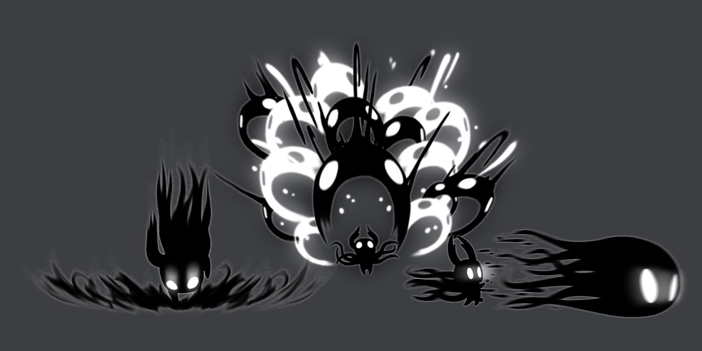

O Vazio é um elemento central na história e na mitologia de Hollow Knight, representando uma força misteriosa e poderosa que permeia o reino de Hallownest. Ele é frequentemente associado à escuridão, ao desconhecido e à essência do próprio reino. O Vazio é uma presença enigmática que influencia os eventos do jogo, desde a criação de criaturas e entidades até a corrupção que afeta os habitantes de Hallownest. Ele é uma força primordial que desempenha um papel crucial na narrativa, simbolizando tanto a ameaça quanto a esperança dentro do mundo sombrio de Hollow Knight.
